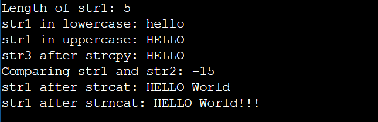

Control Structures
Code:
#include <stdio.h>
int main()
{
int num ,i = 1;
//if-else statement
printf("Enter a number:");
scanf("%d",& num);
if(num>0)
{printf("The number is positive.\n");
}
else if (num<0)
{printf("The number is negitive.\n");
}
else
{printf("The number 0\n");
}
//switch-case statement
printf("Enter a number(1-3) to see a message: ");
scanf("%d",& num);
switch (num) {
case 1:
printf("You selected One!\n");
break;
case 2:
printf("You selected Two!\n");
break;
case 3:
printf("You selected Three!\n");
break;
default:
printf("Invalid choice!\n");
}
// For loop
printf("\nFor Loop: Printing numbers from 1 to 5\n");
for (i = 1; i <= 5; i++) {
printf("%d ", i);
}
printf("\n");
// While loop
printf("\nWhile Loop: Printing numbers from 1 to 5\n");
i = 1;
while (i <= 5) {
printf("%d ", i);
i++;
}
printf("\n");
// Do-while loop
printf("\nDo-While Loop: Printing numbers from 1 to 5\n");
i = 1;
do {
printf("%d ", i);
i++;
} while (i <= 5);
printf("\n");
// Break and continue statement
printf("\nUsing break and continue:\n");
for (i = 1; i <= 10; i++) {
if (i == 5) {
printf("Skipping number 5 using continue\n");
continue;
}
if (i == 8) {
printf("Breaking loop at 8\n");
break;
}
printf("%d ", i);
}
printf("\n");
return 0;
}
Output:

I/O functions
Code:
#include <stdio.h>
int main() {
int num;
char ch;
char str[100];
// Formatted Input/Output Functions
printf("Enter a number: ");
scanf("%d", &num);
printf("You entered: %d\n", num);
// Clear input buffer
while ((getchar()) != '\n');
// Unformatted Input/Output Functions
printf("Enter a character: ");
ch = getchar(); // Taking a single character input
printf("You entered: ");
putchar(ch);
printf("\n");
// Clear input buffer
while ((getchar()) != '\n');
printf("Enter a string: ");
fgets(str, sizeof(str), stdin); // Using fgets() for safety
printf("You entered: ");
puts(str);
return 0;
}
Output:

String handling functions
Code:
#include <stdio.h>
#include <string.h>
int main() {
char str1[50] = "Hello";
char str2[] = "World";
char str3[50];
// strlen()
printf("Length of str1: %zu\n", strlen(str1));
// strlwr()
strlwr(str1);
printf("str1 in lowercase: %s\n", str1);
// strupr()
strupr(str1);
printf("str1 in uppercase: %s\n", str1);
// strcpy()
strcpy(str3, str1);
printf("str3 after strcpy: %s\n", str3);
// strcmp()
printf("Comparing str1 and str2: %d\n", strcmp(str1, str2));
// strcat()
strcat(str1, " ");
strcat(str1, str2);
printf("str1 after strcat: %s\n", str1);
// strncat()
strncat(str1, "!!!", 3);
printf("str1 after strncat: %s\n", str1);
return 0;
}
Output:
